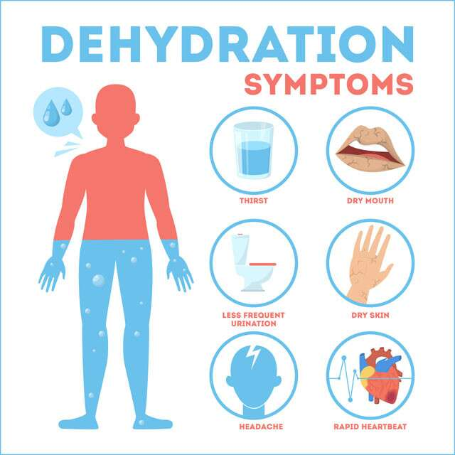

DEHYDRATION

- They think that only hydrated foods can help prevent dehydration.
- But bananas are one of the fruits that can help prevent dehydration
- Potassium deficiency occurs when the body becomes dehydrated. Bananas are high in potassium.
- It also helps fight dehydration
- You can take one or two bananas before that if you are working too hard to increase sweating.
- This will help the body fight dehydration.
- Barley water Barley- 1 cup, Water - 4 cups, Honey - as needed Add a cup of barley to the water and boil in the oven for 40 to 50 minutes. Drain and let cool, then add lemon and honey and mix well.
- Drink this three to four times at regular intervals throughout the day.
- ORS solution Practice drinking home-made ORS solution in the summer.
- Water - 4 tbsp Salt - half a teaspoon Sugar - 6 tbsp Add salt and sugar to the water and mix well until they are completely dissolved.
- You can drink this water when you are thirsty and not thirsty.
- Similarly it is necessary to drink up to three liters of water per day.
- ORS is important in fluids to help treat dehydration.
- This is an alternative in times of dehydration.
- This ORS solution may help to increase the amount of sugar, salt, and sodium lost due to dehydration.
- Lemon water Lemon fruit - half the size Water - 1 tsp Honey - if necessary It is better to squeeze the juice of half a fruit in a tumbler of water and drink it at least once a day with honey.
- You can drink this for two or three tumblers